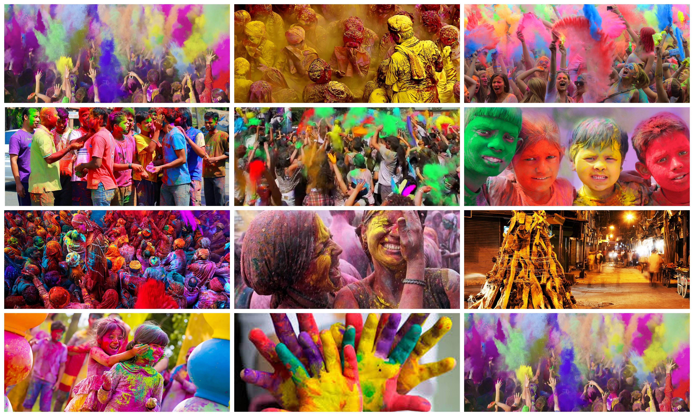

Holi is a Hindu spring festival in India and Nepal, also known as the festival of colours or the festival of sharing love.[5][6] Holi is a two-day festival which starts on the Purnima (Full Moon day) falling in the Bikram Sambat Hindu Calendar [7] month of Falgun, which falls somewhere between the end of February and the middle of March in the Gregorian calendar
The first day is known as Holika Dahan or Chhoti Holi and the second as Rangwali Holi, Dhuleti, Dhulandi or Dhulivandan.It is an ancient Hindu religious festival which has become popular with non-Hindus in many parts of South Asia, as well as people of other communities outside Asia.It is primarily observed in India, Nepal, and other regions of the world with significant populations of Hindus or people of Indian origin and Nepalese diaspora. In recent years the festival has spread to parts of Europe and North America as a spring celebration of love, frolic, and colours.Holi celebrations start on the night before Holi with a Holika bonfire where people gather, do religious rituals in front of the bonfire, and pray that their internal evil should be destroyed as the bonfire starts. The next morning is celebrated as Rangwali Holi - a free-for-all carnival of colours,[9]
Holi is celebrated at the approach of the vernal equinox, on the Phalguna Purnima (Full Moon). The festival date, which is determined by the Hindu calendar, varies from year to year on the Gregorian calendar, typically coming in March, sometimes in February. The festival signifies the victory of good over evil, the arrival of spring, end of winter, and for many a festive day to meet others, play and laugh, forget and forgive, and repair broken relationships, and is also celebrated as a thanksgiving for a good harvest.
Holika Dahan
Shops start selling colours for Holi in the days and weeks beforehand.
Days before the festival people start gathering wood and combustible materials for the bonfire in parks, community centers, near temples and other open spaces. On top of the pyre is an effigy to signify Holika who tricked Prahalad into the fire. Inside homes, people stock up on pigments, food, party drinks and festive seasonal foods such as gujiya, mathri, malpuas and other regional delicacies.
Holika dahan
On the eve of Holi, typically at or after sunset, the pyre is lit, signifying Holika Dahan. The ritual symbolises the victory of good over evil. People gather around the fire to sing and dance.
Play with colours
Holi frolic and celebrations begin the morning after the Holika bonfire. There is no tradition of holding puja (prayer), and the day is for partying and pure enjoyment. Children and young people form groups armed with dry colours, coloured solution and water guns(pichkaris), water balloons filled with coloured water, and other creative means to colour their targets.Traditionally, washable natural plant-derived colours such as turmeric, neem, dhak, and kumkum were used, but water-based commercial pigments are increasingly used. All colours are used. Everyone in open areas such as streets and parks is game, but inside homes or at doorways only dry powder is used to smear each other's face. People throw colours and get their targets completely coloured up. It is like a water fight, but with coloured water. People take delight in spraying coloured water on each other. By late morning, everyone looks like a canvas of colours. This is why Holi is given the name "Festival of Colours".
Groups sing and dance, some playing drums and dholak. After each stop of fun and play with colours, people offer gujiya, mathri, malpuas and other traditional delicacies.[39] Cold drinks, including adult drinks based on local intoxicating herbs,[13] are also part of the Holi festivity.